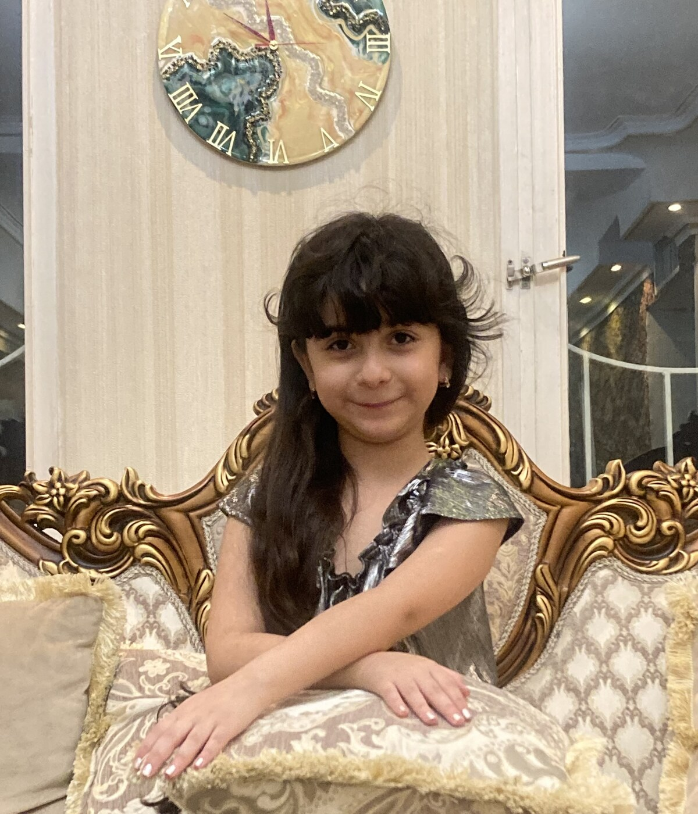
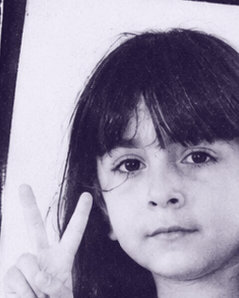
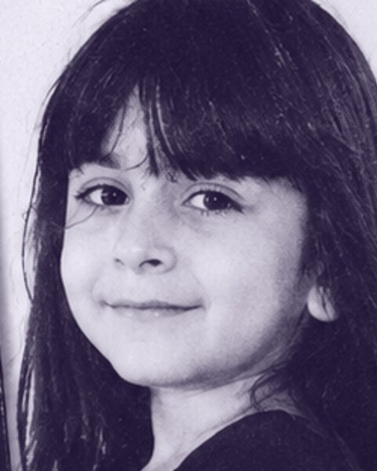
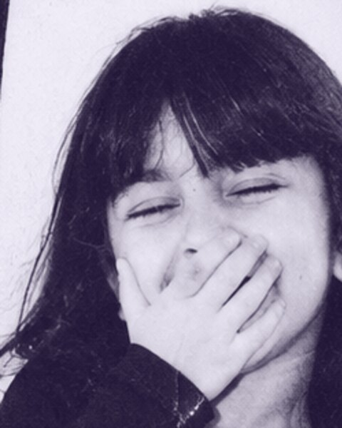
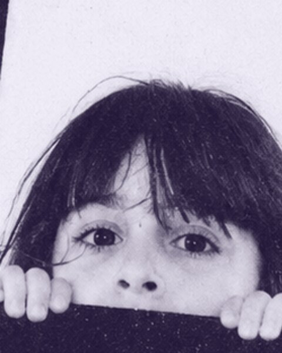

کیفیت قبل از هر چیز
استیل و برنج با آبکاری چندلایه؛ هر قطعه قبل از ارسال از نظر رنگ، قفل و پرداخت بررسی میشود. اگر مشکلی بود، تعویض میکنیم.
نفس یک برند اکسسوری است که با یک سؤال ساده شروع شد: «چرا اکسسوریهای خوشساخت همیشه یا خیلی گراناند یا خیلی بیکیفیت؟» جوابش را با ساختن قطعاتی دادیم که هم قیمت منصفانه دارند، هم آبکاریشان دوام میآورد و هم برای استایل امروز طراحی شدهاند.
امروز هر قطعهٔ نفس قبل از ارسال، در سه مرحله کنترل کیفیت میشود و در جعبهٔ مخصوص خودش با کارت دستنویس به دستت میرسد. ما باور داریم اکسسوری نباید لوکسِ دستنیافتنی باشد؛ باید بخشی از روزمرهات شود.

استیل و برنج با آبکاری چندلایه؛ هر قطعه قبل از ارسال از نظر رنگ، قفل و پرداخت بررسی میشود. اگر مشکلی بود، تعویض میکنیم.
کالکشنها با کمک خودِ دخترها انتخاب میشوند؛ از نظرسنجی اینستاگرام تا تست دو هفتهای محصول پیش از عرضهٔ عمومی.
بدون هزینهٔ اضافه برای برند؛ بستهبندی ما قابل بازیافت است و کارت دستنویس داخل هر سفارش، رایگان.
اولین سری محصولات در یک استوری اینستاگرام فروش رفت؛ در ۴۸ ساعت.
چوکر و گردنبندهای مروارید اضافه شد؛ پرفروشترین دستهٔ ما تا امروز.
بستهبندی اختصاصی و ضمانت آبکاری راهاندازی شد؛ نرخ رضایت به ۴٫۹ رسید.
حالا میتوانی همهچیز را آنلاین ببینی، فیلتر کنی و در چند دقیقه سفارش بدهی.
این چهار قاب از یک کانتکتشیت دوازدهقابی انتخاب شدهاند: یک رول سیاهوسفید که اولینبار برای نفس گرفته شد و هیچکدام از قابهایش ریتوش نشد.




#بیریتوش هیچ فیلتر زیبایی روی این عکسها نیست؛ فقط رنگشان به بنفش نفس نزدیک شده. بقیهاش همان روز بود.